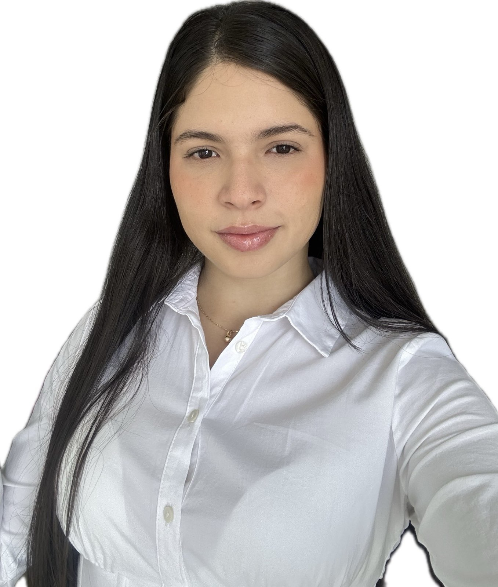
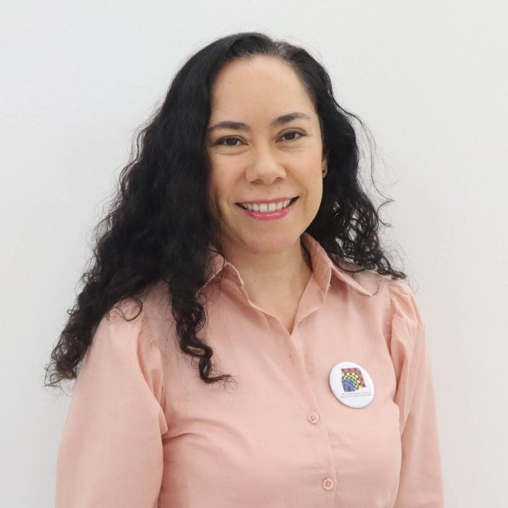
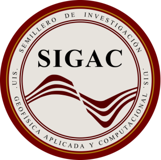

| Inicio | Registro | Programa | Cursos | Charlas | Novedades | Cómo llegar | Sesión práctica |
Es un gran honor invitarte a la 5a edición de la Semana de la Geofísica, que tendrá lugar del 4 al 8 de noviembre de 2025 en las instalaciones de la Universidad Industrial de Santander (UIS), sede Bucaramanga. Este evento, reúne a destacados expertos nacionales e internacionales, estudiantes, profesionales e investigadores apasionados por la geofísica, la inteligencia artificial y la geología ambiental, en un espacio académico, científico y social único en el país.
La 5a Semana de la Geofísica se consolida como el encuentro más importante en su campo a nivel nacional, donde se unen la innovación, la interdisciplinariedad y la búsqueda de soluciones para los retos actuales en exploración de fuentes de energía, monitoreo ambiental, transición energética y gestión del riesgo. Durante cinco días, podrás disfrutar de conferencias magistrales, sesiones temáticas, presentaciones orales y de pósters, además de participar en un challenge académico, con premios para los mejores trabajos de investigación y propuestas más creativas.
Además de su programa académico, el evento contará con actividades sociales y de integración, diseñadas para fortalecer redes de colaboración y fomentar un ambiente dinámico y enriquecedor para todos los participantes. La 5a Semana de la Geofísica es una experiencia para aprender, compartir y construir juntos el futuro de la geociencia en Colombia.
¡Te esperamos en Bucaramanga para ser parte de este gran encuentro!
Para participar en la 5° Semana de la Geofísica con tu trabajo de investigación, debes enviar tu resumen siguiendo las instrucciones de registro.
Un espacio creado para visibilizar el trabajo que realizan nuestros estudiantes y fomentar la integración académica entre las distintas áreas de las geociencias.
Viernes, 7 de noviembre — 1:00 pm a 4:00 pm · Sótano del Edificio de Laboratorios Pesados

Ana Mantilla
Geóloga
MSc(s) Maestría en Geofísica
|

Daniela Quintero
Geóloga
|

Paul Goyes
Geólogo
MSc en Geofísica
PhD(c) en Ciencias de la Computación
|
León Suárez
Ingeniero Civil
MSc. en Ingeniería de Sistemas e Informática
PhD(s) en Ciencias de la Computación
|
|
Henry Arguello
Ingeniero Electricista
MSc. en Ingeniería Eléctrica
PhD en Ingeniería Eléctrica y Computación
|
Sait Khurama
Geólogo
MSc. en Geofísica
|
|

Ana Gutierrez
Profesional en Gestión Empresarial
Mag. en Dirección y Gestión de Proyectos
|
üí¨ √önete a nuestro grupo de WhatsApp:
Grupo de información y actualizaciones
Para más información y cualquier consulta, no dude en contactar a los organizadores: Ana Mantilla, Paul Goyes y Grupo de Investigación HDSP.

Grupo de Investigación HDSP
|
Grupo de Investigación GIGBA
|
|

Semillero de Investigación SIGAC
|
GIDCO
|
|
La Geotienda
|
|